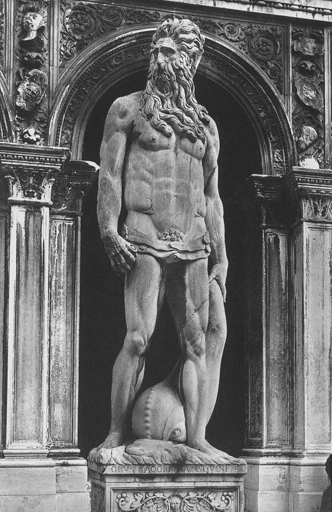

Friday, July the 23rd, 2004
back to: title, date or indexes

Today is Neptunalia, the day when the ancient Romans honoured the god of the seas (and water in general), seen here looking suitably godlike. The statue is by Jacopo Sansovino (1486-1570), who was also known as Jacopo Tatti. Should you wish to ape an ancient Roman and celebrate the day, here's what to do: go out to a field and build yourself a little hut out of laurel branches. This is your umbra. Take a picnic, and make sure you drink mineral water. You can carry on picnicking and generally larking about until tomorrow. You may also wish to sacrifice a bull, or begin doing some irrigation work. Oh, and if you have a horse, try to get it to pay some sort of obeisance to Neptune. Apparently, he invented horses.